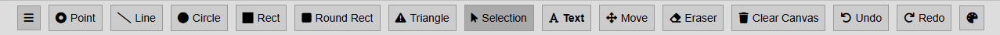
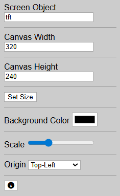
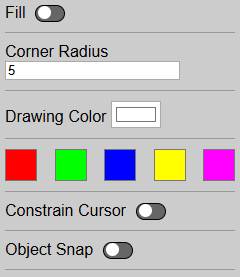

TFT Generator Instructions
TFT Generator is a tool for creating graphical interfaces for TFT displays. This guide explains all toolbar buttons and panel controls.
Top Toolbar - Drawing Instruments
The top toolbar contains all drawing and editing tools. Most tools work as expected - click to select and use them on the canvas.


Top toolbar with drawing and editing instruments.
Available Tools:
- Point - Place a single pixel point
- Line - Draw straight lines
- Circle - Draw circles
- Rect - Draw rectangles
- Round Rect - Draw rectangles with rounded corners
- Triangle - Draw triangles
- Selection - Select objects on canvas
- Text - Add text labels
- Move - Move selected objects
- Eraser - Remove objects
- Clear Canvas - Remove all objects
- Undo - Revert last action
- Redo - Restore reverted action
- Color Picker - Select drawing color
⚠ Selection Tool - Important Behavior
The Selection tool has special behavior depending on drag direction:
- Right to Left - Selects all objects that touch the selection area in any way (even partially)
- Left to Right - Selects only objects that are fully contained within the selection area
Use this behavior to precisely control which objects get selected in complex scenes.
Left Panel - Canvas Settings
The left panel controls canvas properties and screen object settings.


Left panel for canvas configuration.
Controls:
- Screen Object - Name identifier for the TFT screen object
- Canvas Width - Set canvas width in pixels (default: 320)
- Canvas Height - Set canvas height in pixels (default: 240)
- Set Size - Apply width and height changes
- Background Color - Choose canvas background color
- Scale - Adjust zoom level for canvas preview
- Origin - Set coordinate origin (Top-Left or other positions)
Right Panel - Drawing Options
The right panel provides additional options for drawing shapes and objects.


Right panel for drawing options and color selection.
Controls:
- Fill - Toggle fill mode for shapes (on/off)
- Corner Radius - Set corner roundness for Round Rect tool (value: 0-50)
- Drawing Color - Text input for precise color value
- Color Presets - Quick color selection (Red, Green, Blue, Yellow, Magenta)
- Constrain Cursor - Lock cursor movement to grid or axes
- Object Snap - Enable snapping to other objects for precise alignment
Tip: Enable Object Snap when you need precise alignment between shapes. Use color presets for quick color changes while drawing.